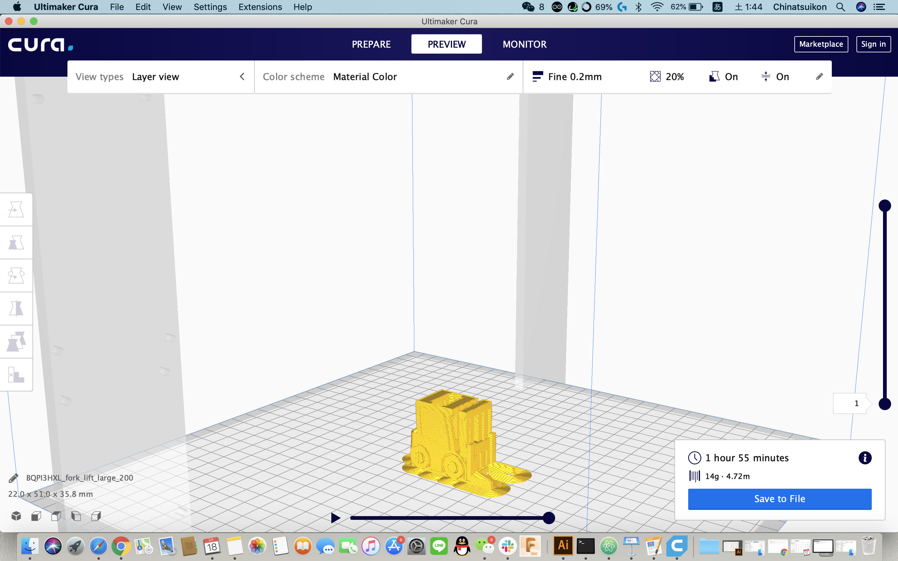
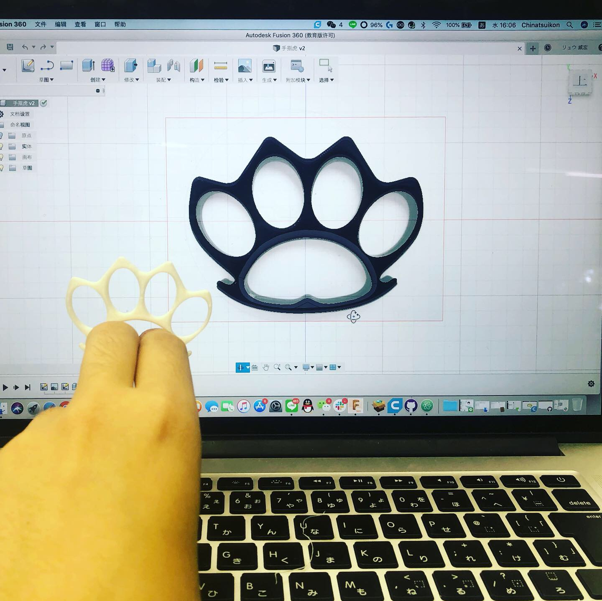
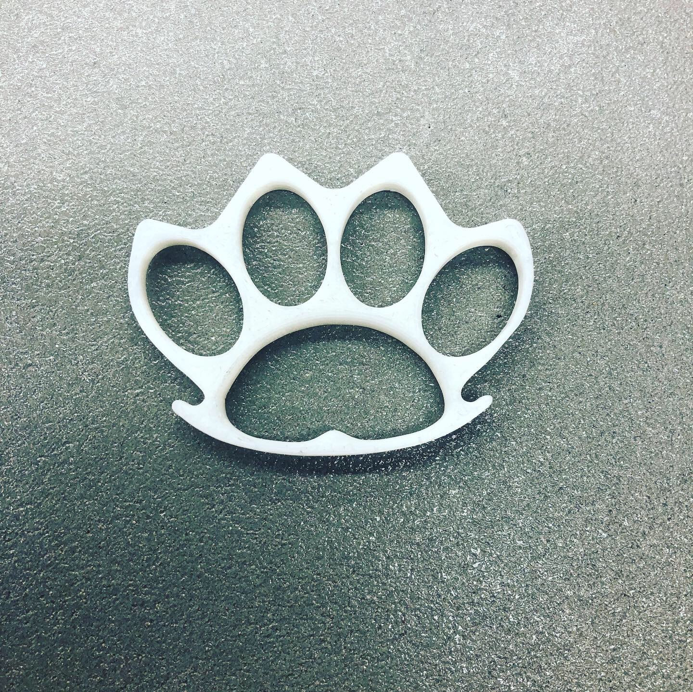

まずチームで3Dプリンターを組み立てる

さらに白石先生が紹介してくれたのthingiverseウェブサイトを利用して、自分が好きな３dモデルファイルをdownloadする
私は選んだファイルはフォ—クリフト3Dファイトです

しかし、残念ながら完成したのフォ—クリフトサイズが小さいので結局は壊れた。

fusion360練習するため、ゴールデンウィークに作ったのメリケンサックの3Dファイルは3Dプリンターに導入して30分ぐらいを経た後にミニメリケンサックを完成した

メリケンサックを制作後の反省
3Dプリンターで単純的なものつくりだけではなく、危険性が高いの物も作られるので、安全の為、これから危険性が高いの物をつくらいないように自分が欲しいものを作ります
